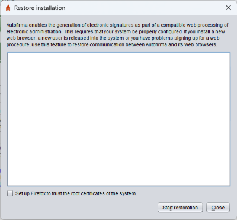

From this panel it is possible to restore the Autofirma installation to correct problems affecting communication between web browsers and the application. The most common cases are: a new web browser has been installed after the installation of Autofirma, more users have been created on the computer or more user profiles for a browser, the profile of a user has been reset, etc.

By activating this option (only available in Windows and macOS), the restore process is allowed to configure Firefox in such a way that the browser will rely on the certificates installed in the root certificate store of the system (Trusted Authorities). In this way, Autofirma will continue to operate in this browser even if new profiles are set up, the profile is cleaned or if the trust certificate is removed from the browser store. If this box is left off, this setting will be removed if it is already established.
By pressing the "Start Restoration" button, the restoration process will begin.
WARNING FOR MICROSOFT WINDOWS USERS: If a message appears when running the installation process indicating "The code execution cannot proceed because it was not found VCRUNTIME140.dll. This problem can be solved by reinstalling the program", you must install the redistributable execution environment of Microsoft Visual C++ 2015 and re-run the operation in order to complete the restoration.